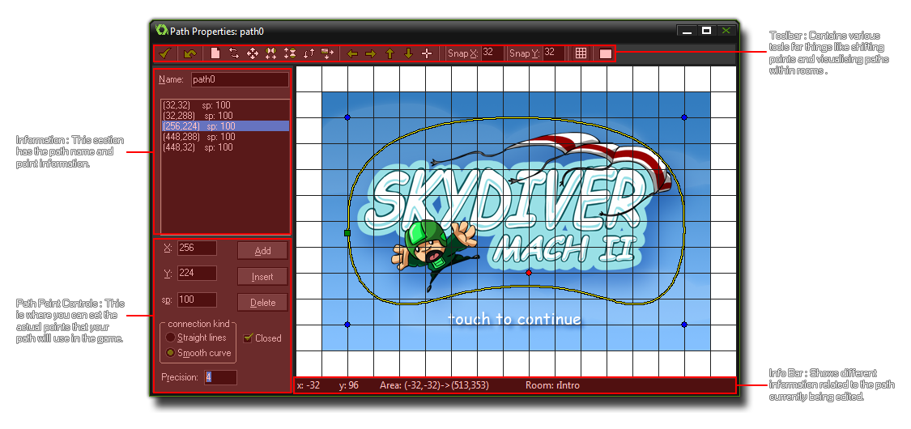
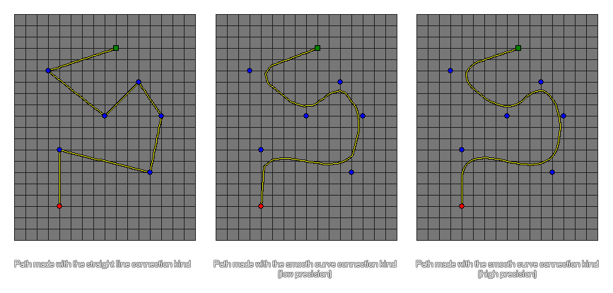

有些时候你的游戏中需要让一些物体按照特定路径移动穿过整个关卡。一般说来只需要简单的创建一个包含了房间中一些位置坐标的数组然后让你的实例在这些位置之间运动即可。但是创建这个数组是一件繁琐的操作，并且难以进行修改、测试和应用在不同实例上。为此， GameMaker: Studio 提供了 路径 资源以及一个专门设计的 路径编辑器。
路径的基本理念非常简单——通过在路径编辑器中绘制一条路径，你就可以在一个物体的创建事件中添加一个动作（或者用代码）来让这个物体沿着某个特定路劲运动。同时你也可以设置沿路径运动时的速度，以及在运动到不同位置及方向时执行不同的动作。让我们从认识路径编辑器开始了解路径。
要在游戏中创建新的路径，只需要点击 Resources 菜单中的 Create Path 选项（或者右击 路径资源然后选择 Create Path，在接下来的窗口中你可以创建一个新路径（下图中已经创建了一条路径）： 如你所见，占了路径编辑器绝大部分的是展示你绘制的路径的可视化界面，但是在编辑器边缘还有许多的按钮、选项卡和信息栏，这些工具帮你完成路径的创建和修改。.
就和 GameMaker: Studio 里的其它资源一样，每个路径资源你都需要指定一个独一无二的名称 ，因为在接下来的过程中你需要用这个名称来识别这个资源，并且在一个好的系统中人们通常使用前缀（或者后缀）来区别不同类型的资源（如 path_Enemy_1 或者 PowerUp_path），这样在代码或者动作中才好区分这些资源。当你给路径起好名字后，你就可以可以通过往右侧的窗口中放置点来定义这个路径了。这只需要简单的在你想让你的路径通过的位置上点击鼠标左键即可。 同时，路径的起点会用绿色的方块标出，当前的路径点用红色的点表示，而蓝色的点代表的是一个普通的路径点（路径本身是一条黄色的线）。你可以点击任何一个路径点然后拖动鼠标来改变这个点的位置，不过要注意的是绿色的路径起点是不能直接在这里改变位置的，它会根据你的路径是否平滑而自动改变它的位置。这些路径点会被自动添加进位于路径名下方的路径点列表 ，并且你可以在这里点击以选择相应的点。
在窗口顶端的是路径工具栏，上面有数个不同功能的按钮：
- 确认 : 点击这个按钮会保存当前路径设置并且关闭路径编辑器。注意点击这个按钮会导致路径直接被保存，并不会提示你任何关于路径是否被修改。而如果你点击关闭按钮，编辑器会提示你路径是否被修改过。
- 撤销 : 这个按钮功能很简单，撤销一次操作。一次操作的含义是只有最后一次的改动会被撤销。
- 路径点操作 : 这些按钮都会对路径点进行某种修改，让你可以彻底删除这个路径点，对路径点进行镜像操作或者移动路径点。
- 路径视图操作 : 你可以用这些按钮来改变右侧的路径视图（有些时候路径可能比左侧的可视化区域还要大）。Note that you can also click and
- 路径编辑器操作 : 这里你可以改变路径网格点的分辨率，也可以隐藏或者显示网格点。最后一个按钮可以让你选择一个房间的背景显示在可视化区域中，这个可以让你更好的把握路径在房间中的效果。
你可以用 Add 按钮来向路径中添加路径点，这个新的路径点的位置会和你添加的最后一个路径点重合（或者如果当前路径中没有路径点，那么这个新的点就会成为起始路径点）。随后你可以通过点击这个点并且拖动它来移动这个路径点（你也可以对路径上的其它点这么做），或者你可以修改左侧标有 X 和 Y 的输入框的值来改变点的位置。通过改变 Sp 输入框里的值，你可以给这个点设置一个速度（默认值是100）。这个速度值实际上是个百分比，当实例经过这个点时速度会按照这个百分比改变。如果你的实例沿路径运动时的初始速度是2（2像素每步），然后其中一个路径点的 Sp 值为50，那么在实例运动经过这个路径点时，它的速度会减小为1（当前速度的50%）。同样的，你可以将 Sp 值设置为150，那么这会让实例的运动速度变快。用这种方法你可以创建不少看上去很棒的动态运动，并且不需要写一行代码！
在 Add 按钮下方的是 Insert 和 Delete 按钮。如果你选中路径上的一个路径点（不管你是直接点击这个点还是在路径点列表中选中的这个点），然后点击 Insert 按钮，那么一个新的点将被插入到你选中的那个点的同一位置上。然后你可以拖动这个新插入的点到你想要的位置上去。如果你点击的是 Delete 按钮，你选中的那个点将被从路径中删除（如果你不小心删错了，你可以使用之前提到的 撤销 按钮）。
最后，你可以指定路径的连接方式以及路径是否需要闭合（一条闭合的路径会将路径的起始点和结束点连接起来）。连接方式可以是线段或者是平滑。如果设置为线段方式，那么路径只是简单的用直线依次连接每一个点，路径的方向只在每个连接点处才会改变；而如果使用平滑方式，那么系统会根据你的点创建一条更加平滑的曲线路径。同时你可以设置曲线的平滑程度（默认是4），范围是1至8，其中8最为平滑。如下的图片展示了一些不同设置的路径的样例：

底部的信息栏显示了鼠标在编辑器中的x y坐标，以及可视范围的坐标。路径编辑器有一个中心点（0，0），并且它的坐标系统是和房间编辑器相同的，也就是说向下y坐标递增，向上y坐标递减，向右x坐标递增，向左x坐标递减。这样你就可以根据这些坐标来绘制你的路径。这也意味着你在设计路径时搞清楚当前究竟位于什么位置很有必要，而这可以通过观察 Area 值来了解——第一对坐标表示了当前视角左上角的坐标，而第二对坐标表示右下角的坐标。
要在一个物体的实例上绑定一个路径，你可以使用路径动作（动作 - 运动动作章节有详细介绍），或者可以使用代码来完成。当你使用脚本或者一小段代码片段时，你对于路径是如何工作的可以有更多的选择，同时我们有不少现成的函数来完成一些基础的路径动作，比如沿路径运动（参见 代码参考 - 路径），以及更加复杂的函数，比如在游戏中修改一个路径上的路径点（参见 代码参考 - 改变路径）。
| Converted from CHM to HTML with chm2web Pro 2.85 (unicode) |